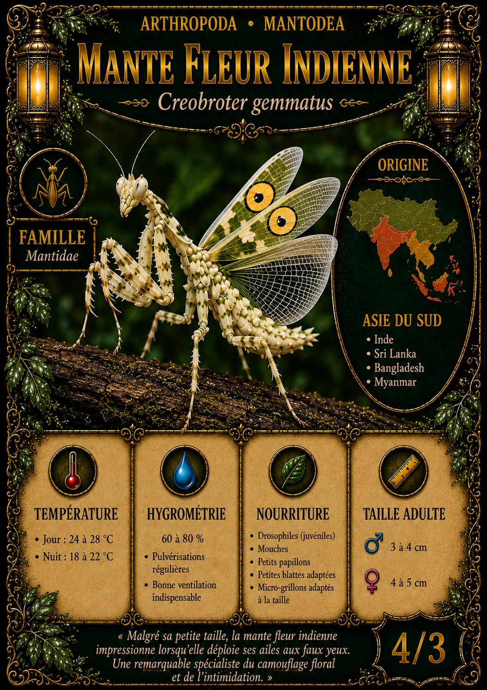

Mantodea · Mantidae
Mante fleur indienne
Creobroter gemmatus
Malgré sa petite taille, la mante fleur indienne impressionne lorsqu’elle déploie ses ailes aux faux yeux.
Valeur carte : 4/3
Fiche d’élevage
Origine
Asie du Sud
Inde, Sri Lanka, Bangladesh, Myanmar
Température
Jour 24 à 28 °C / Nuit 18 à 22 °C
Hygrométrie
60 à 80 %
Bonne ventilation indispensable.
Nourriture
Drosophiles, mouches, petits papillons, petites blattes adaptées, micro-grillons adaptés
Taille adulte
♂ 3 à 4 cm / ♀ 4 à 5 cm
Maintenance
Terrarium vertical bien ventilé, nombreuses branches, maintien individuel conseillé après les jeunes stades pour éviter le cannibalisme.
Reproduction
Accouplement sous surveillance, oothèque à maintenir selon l’hygrométrie de l’espèce. Les jeunes acceptent d’abord de petites proies adaptées à leur taille.
Particularités
Espèce prédatrice à croissance par mues successives. Les femelles sont généralement plus grandes et plus massives que les mâles.